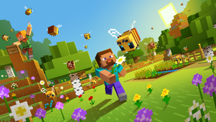
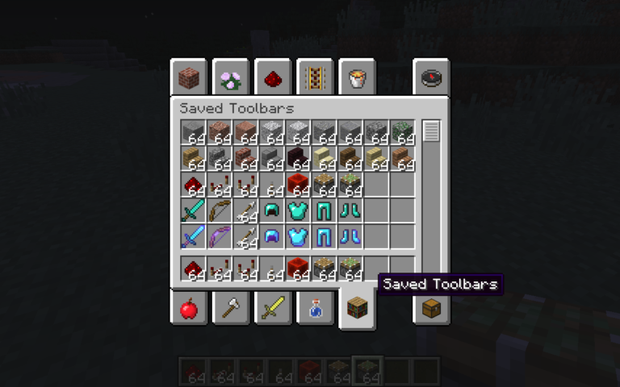

Minecraft est un jeu créé par Markus Persson et actuellement développé par Mojang. Il permet à ses joueurs de manipuler un monde en trois dimensions, composé entièrement de blocs à détruire, reposer et transformer. Jouable en solo ou en multijoueur, Minecraft permet d'explorer des cavernes sans fin, combattre divers ennemis, collecter des ressources et surtout bâtir des constructions immenses, parfois artistiques. Il s'agit d'un univers composé de voxels et généré aléatoirement, qui intègre un système d'artisanat axé sur l'exploitation puis la transformation de ressources naturelles (minéralogiques, fossiles, animales et végétales).
Mode survie
Le mode de Survie est un mode de jeu de Minecraft dans lequel les joueurs doivent collecter des ressources, bâtir des structures, combattre des monstres, gérer leur faim et explorer le monde pour survivre et prospérer, en solo ou en multijoueur. En mode de difficulté Paisible, les contraintes sont minimales, alors que le joueur doit être particulièrement vigilant en mode Hardcore, sachant qu'il n'a qu'une vie et que la difficulté est bloquée en Difficile.
Mode créatif
Le mode Créatif est l'un des modes de jeu dans Minecraft. Le mode Créatif met de côté tout aspect de survie du jeu et permet aux joueurs de construire et détruire facilement des structures. Les joueurs ont la plupart des blocs disponibles en quantité illimitée et n'ont pas à se soucier de leurs points de vie (il est toutefois possible de mourir en tombant dans le vide). Il est aussi possible de voler en pressant deux fois la touche de saut.
Liste des versions différentes de Minecraft :
- 1.15.1 - Java Edition
- 1.14.1 - Bedrock Edition
- 1.12.5 - Education Edition
- 0.9.0 - Minecraft Earth